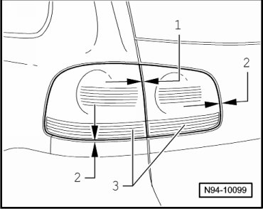

LEMON Manuals
: Even more car manuals for everyone: 1960-2025
Home
>>
Volkswagen
>>
2004
>>
Touareg (7LA) V6-3.2L (BAA)
>>
Repair and Diagnosis
>>
Specifications
>>
Mechanical Specifications
>>
Tail Lamp
>>
Tail Lamp Gap Dimensions
Tail Lamp Gap Dimensions
Tail Lamp
Gap Dimensions

1 - Gap dimension
•
0.16 in ± 0.5 mm
2 - Gap dimension
•
0.04 in ± 0.01 in
3 - Flushness
•
0.5 mm ± 0.5 mm